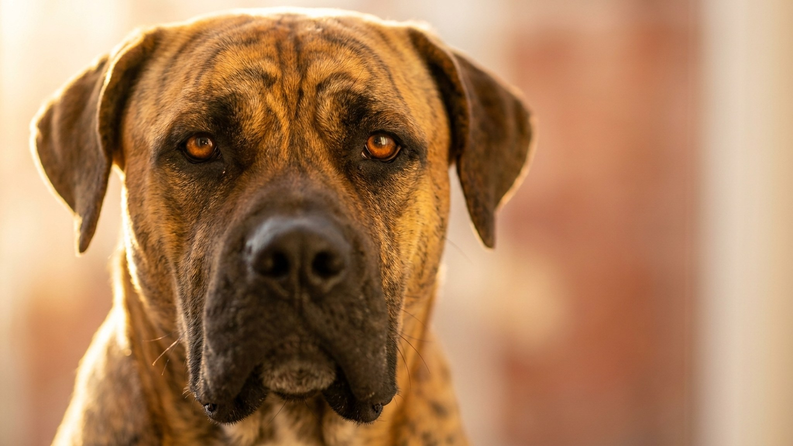

Щенок Преса Канарио в 10 недель доверчивый и мягкий. Взрослый пёс весит 50–65 кг и чётко разграничивает «свои» и «чужие» без вашей команды. Канарский дог входит в число пород, где фундамент первого года определяет всё: насколько пёс управляем, безопасен рядом с людьми и комфортен дома. Ниже то, что нужно знать до того, как забирать щенка.
🐾 Ваш питомец — преса Канарио?
Заведите профиль в AnimaLife: приложение запомнит породу, возраст и вес и будет подсказывать по уходу именно для неё. Вопросы AI-ветеринару — круглосуточно и бесплатно.
Завести профиль → Завести в MAX →
У вас iPhone? AnimaLife есть в App Store
Канарский дог подходит владельцу с опытом содержания крупных пород, желательно с собственным домом или просторной квартирой. Это не собака, которой можно уделять час в день и ждать послушания само по себе.
Преса Канарио хорошо живёт рядом с семьёй, включая детей, если вырос в ней с щенячьего возраста. С незнакомыми людьми он сдержан, с чужими собаками чаще всего конфликтен. Кинологи описывают его как уверенного и доминантного: он принимает человека как авторитет только тогда, когда человек эту позицию заслужил последовательным поведением.
Критический период у Преса Канарио охватывает возраст с 6 до 16 недель. Что щенок не увидел в это время, будет вызывать у него настороженность или резкую реакцию потом. Минимальная программа для щенка:
Канарский дог, выросший в изоляции, становится проблемой из-за страха перед незнакомым, а не из злобы. Хорошо социализированный Преса рядом с хозяином спокоен и уверен.
Взрослому Преса Канарио нужно 1,5–2 часа физической активности в день. Порода выносливая, но не гиперактивная: ему подходят длинные прогулки в свободном темпе, а не бесконечный мяч на площадке. Умственная нагрузка важна так же: обучение командам, поиск по запаху, работа с кинологом.
Без выхода энергии и без чёткой структуры в доме Преса Канарио становится деструктивным. Порядок дня, одинаковые правила от всех членов семьи, предсказуемые границы: на этом держится управляемость этой породы.
Канарский дог не реагирует на жёсткость: доминантная порода воспринимает физическое давление как вызов. Авторитет строится через последовательность: одни и те же правила каждый день, спокойная уверенность, без непредсказуемых реакций.
По уходу порода неприхотлива: короткая шерсть требует чистки раз в неделю, уши и когти проверяют регулярно. По здоровью Преса Канарио склонен к ряду наследственных особенностей: конкретные рекомендации по обследованиям и питанию обсудите с ветеринаром.
🐾 У вас преса Канарио?
AnimaLife соберёт уход под породу: к каким болезням есть склонность, что проверять по возрасту, чем кормить и когда пора к врачу. Бесплатно, прямо в мессенджере.
Собрать план ухода → Собрать в MAX →
У вас iPhone? AnimaLife есть в App Store
🐾 Понравился разбор?
Подпишитесь на канал — каждый день разбираем по одному тревожному симптому у кошек и собак: что в пределах нормы, а когда пора к врачу. Подпишитесь, чтобы не пропустить разбор, который может спасти здоровье вашего питомца.
Материал носит информационный характер и не заменяет очную консультацию ветеринара.